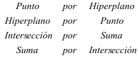
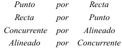

|
Principio de dualidad “ Una proposición P relativa a subespacios de un espacio proyectivo es cierta si y sólo si lo es su proposición dual P*. “ Otro enunciado práctico es: A todo teorema de un espacio proyectivo, referente a propiedades de unión, intersección de subespacios del mismo, corresponde un teorema, llamado dual, de un espacio proyectivo el cual se obtiene cambiando en el enunciado primitivo  Y en el plano queda |